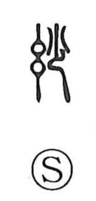

妙

Uncategorized
Kun: tae | On: myo
marvelous ・ exquisite ・ beautiful ・ excellent ・ strange
Explanation
A phono-semantic character, 妙 combines the semantic 女 with the phonetic 少. The element 少 supplies the sound, as in 眇 and 秒, and also hints at fineness and delicacy. Early lexica gloss it as “essence/refinement” and as “good,” so the core sense is refined excellence—what is exact and detailed, what excels, what is exquisite and beautiful. From this subtle refinement also arises the nuance of something marvelously, even intriguingly, strange.